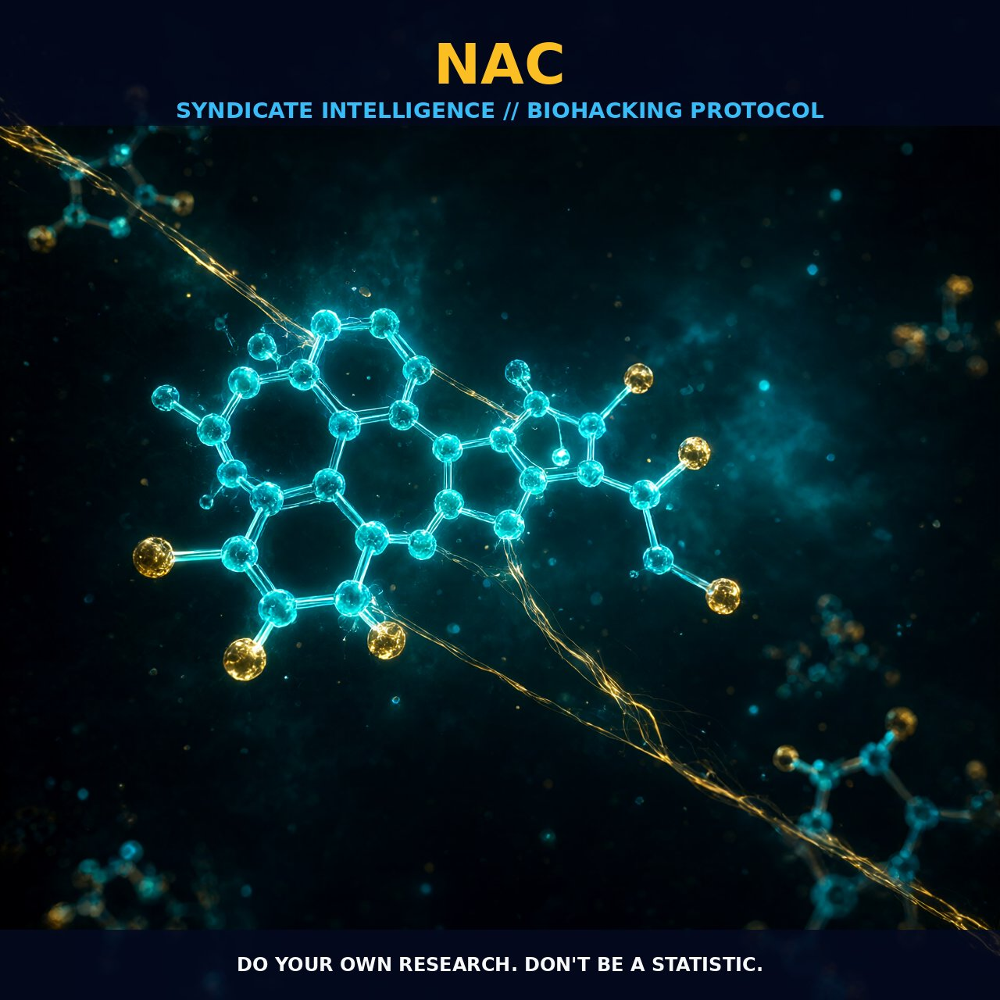

NAC: Thiol Dynamics, Glutamate Modulation, and Blood-Brain Barrier

1. The Pharmacological Architecture of NAC
N-acetylcysteine (NAC) is not merely a supplement; it is a precision-engineered small molecule thiol with a chemical profile defined by distinct pKa values. Central to its efficacy is the thiol group, which sits at a pKa of approximately 9.87 under physiological ionic strength. This elevated pKa is notably higher than natural thiols such as glutathione and cysteine, creating a unique redox potential that allows NAC to efficiently reduce disulfide bonds within proteins. This disruption of ligand bonding fundamentally alters protein structures, a mechanism clearly observed in its ability to modify mucous proteins and other critical cellular targets.
The pharmacokinetics of NAC are governed by pH-dependent membrane penetration and systemic distribution. In the acidic environment of the stomach (pH 1.5 to 3.3), NAC exists predominantly in its neutral form, facilitating rapid cross-gastric diffusion via passive transport. Once in systemic circulation, it leverages carrier-mediated active transport or N-deacetylation to exit blood vessels and infiltrate tissues. While data on blood-brain barrier (BBB) penetration can vary by administration route, NAC demonstrates significant uptake in peripheral tissues including the kidney, liver, and adrenal glands following both oral and intravenous exposure.
2. Biological Leverage and Neurotransmission
NAC serves as a potent modulator of neurotransmission, specifically regulating extracellular glutamate levels to maintain synaptic homeostasis. It drives the cystine/glutamate antiporter to decrease glutamate concentrations and suppress the activation of metabotropic glutamate receptors, particularly mGluR2/3. This suppression reduces synaptic glutamate release, which is critical for normalizing excitotoxic damage observed in models of schizophrenia and addiction. By maintaining intracellular calcium levels and influencing receptor-mediated calcium release, NAC directly addresses dysregulations documented in various psychiatric disorders.
As both an antioxidant and immuno-modulator, NAC reacts rapidly with highly oxidizing radicals such as hydroxyl, nitrite, and carbonate radicals. Although it exhibits lower reactivity toward superoxide and hydrogen peroxide compared to other thiols, its inhibition of NF-kappaB-mediated nitric oxide production by macrophages, glial cells, and astrocytes effectively tempts inflammatory pathways in both the peripheral and central nervous systems.
3. Protocol Implementation and Bioavailability
For cognitive and neuropsychiatric optimization, the primary goal is to modulate the cystine/glutamate antiporter and stabilize glutamatergic signaling. Users should account for NAC's ability to cross the blood-brain barrier; evidence suggests that higher concentrations or specific administration routes can significantly enhance central nervous system uptake. Consistent supplementation maintains adequate intracellular cysteine pools, supporting sustained NAC levels without requiring extreme physiological manipulation.
Timing and formulation are critical due to NAC’s pH-dependent absorption profile. Taking the compound during periods of high gastric acidity or utilizing ester forms can enhance passive diffusion and bioavailability. Furthermore, stacking NAC with other thiol-supporting agents may amplify its effect on redox potential. Its relatively small molecular size allows it to penetrate sterically less accessible spaces where larger reducing molecules like glutathione might struggle. Regular administration provides steady-state modulation of glial cell activity, supporting long-term neural efficiency without the risk of excessive antioxidant depletion.
Prostar Life Hack
Optimize Uptake via pH Timing: To maximize passive diffusion and bioavailability, ingest NAC during periods of peak gastric acidity or pair it with ester-formulated cofactors. This approach leverages its neutral form for efficient membrane crossing, ensuring superior systemic distribution compared to standard dosing windows.
Prostar Life Hack
Optimize Uptake via pH Timing: To maximize passive diffusion and bioavailability, ingest NAC during periods of peak gastric acidity or pair it with ester-formulated cofactors. This approach leverages its neutral form for efficient membrane crossing, ensuring superior systemic distribution compared to standard dosing windows.
[ AUTHOR: LEAD TECHNICAL RESEARCHER ]